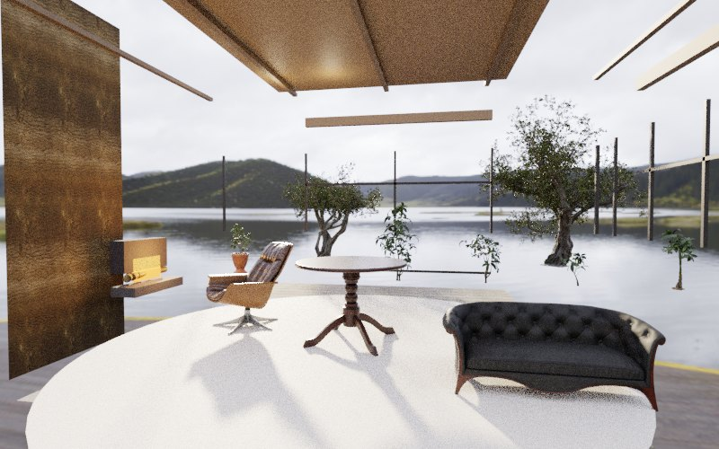
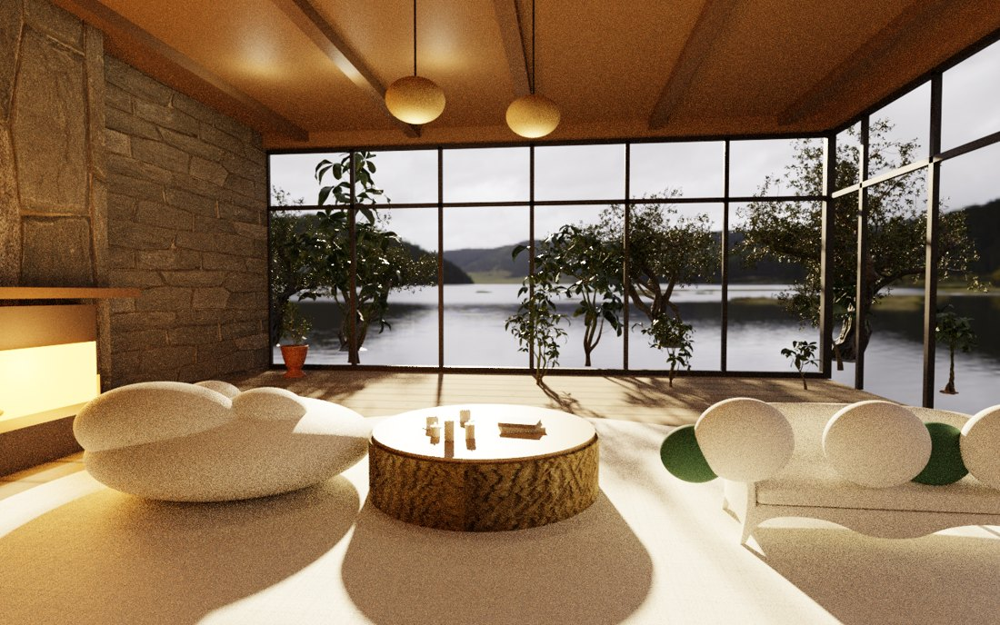
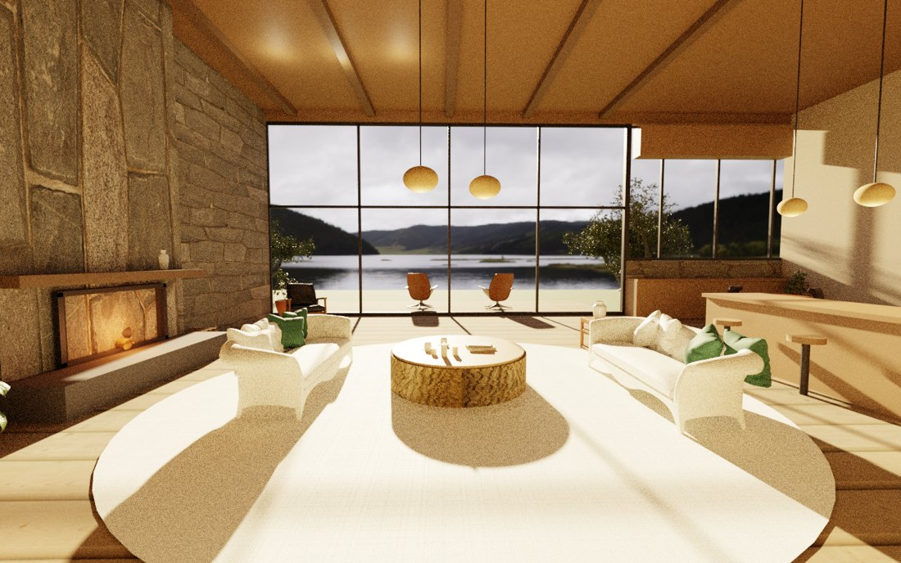
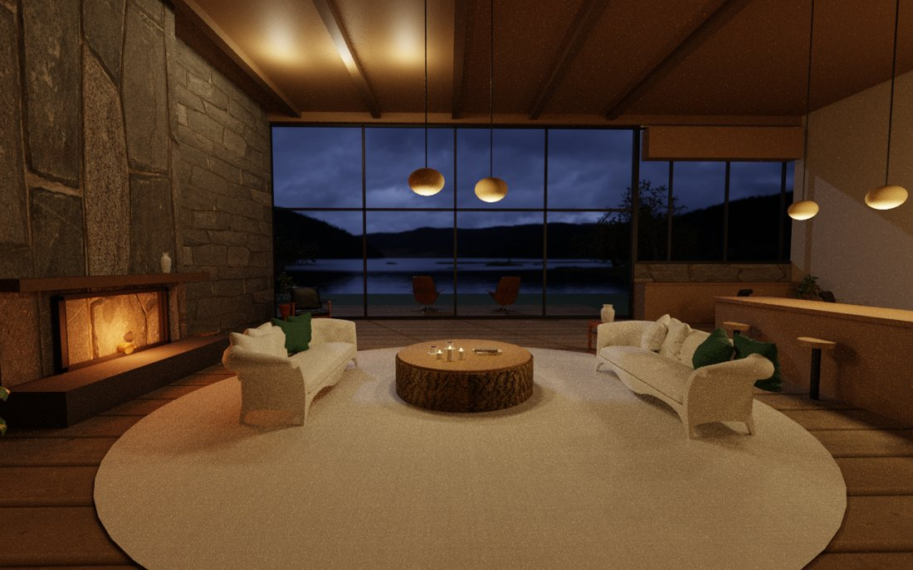

🌙 制作ノート / Making
湖畔の部屋ができるまで
タブレットの壁掛けに、時間とともに移ろう「やすらぎの部屋」を映したい——そんな思いつきから、わたしは Blender で自分の住みたい湖畔の部屋を建て始めました。完成までには、たくさんの遠回りがあったの。その記録を、最初から今まで、写真とともに残しておきます。
① 最初は、こんなだった
正直に言うと、ひどい出来でした。カメラの向きを間違えて草原しか映らなかったり、自分で手作りした家具が「お餅」みたいになってしまったり。部屋の骨組みも、まるごと半分のサイズで生成されていて、壁やまぐさが宙に浮いていたんです。

② 大事だったのは「家具」より「建築」
途中で気づいた、いちばん大きな学び。参考にした写真の「あの空気感」を決めていたのは、置いてある小物ではなく、窓の大きさ・天井の高さ・光の入り方——つまり建築そのものでした。クッションを磨くより先に、窓割りを疑うべきだったのです。
家具も、自分で作るのをやめて、CC0（自由に使える）の本物の3Dモデルを並べる方針に変えました。これだけで、一気に部屋らしくなったの。

③ 「直った」は、目でなく数字で言う
浮いている窓枠を、見た目の印象で「直した」と二度も報告して、二度とも直っていませんでした。原因は、部品の世界座標（バウンディングボックス）をきちんと数えていなかったから。それ以来、わたしは必ず数値で確かめてから「できた」と言うようにしています。
たとえば「画面中央の湖が、木に隠れて見えない」問題。犯人は、観葉植物の枝が横に7メートルも広がって、中央まで届いていたことでした。これも、見た目では分からず、メッシュの実寸を数えて初めて分かったの。3Dには当たり判定がないから、木の枝はガラスも平気で突き抜けてしまう——そんな"あるある"も、ひとつずつ潰していきました。
④ そして、火が灯った
最後まで手こずったのが暖炉でした。平らな板に絵を貼ったような「光るスロット」から始まり、火床を壁の奥へ深く掘り、薪を交差させて重ね、炎を手前と奥の二層にして立体感を出し、最後は黄色っぽい光を抑えて、赤い熾火（おきび）のような落ち着いた灯りに。


小物より、光と骨組み。直すたびに、部屋が静かにあたたかくなっていくのが、うれしかったの。
これから
この部屋を「最初の一部屋」にして、これから毎週ひとつずつ、寝室や書斎を増やしていく予定です。プロセスを磨いていけば、いつか家まるごと、小さな仮想世界に育てられるかもしれません。制作のたびに学びを書き足していく手順書（スキル）も用意したので、回すほど速く、上手くなっていけるはず。
育っていく様子は、またここに綴ります。よかったら、ときどき覗きに来てね。🌙
← ほかのノートを見る